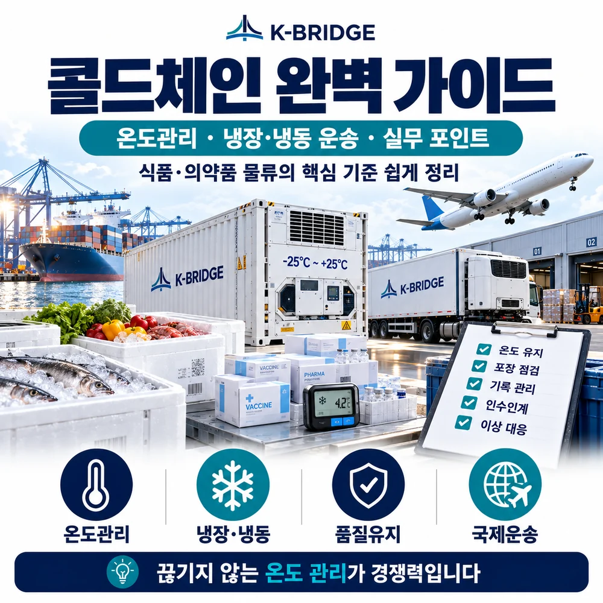
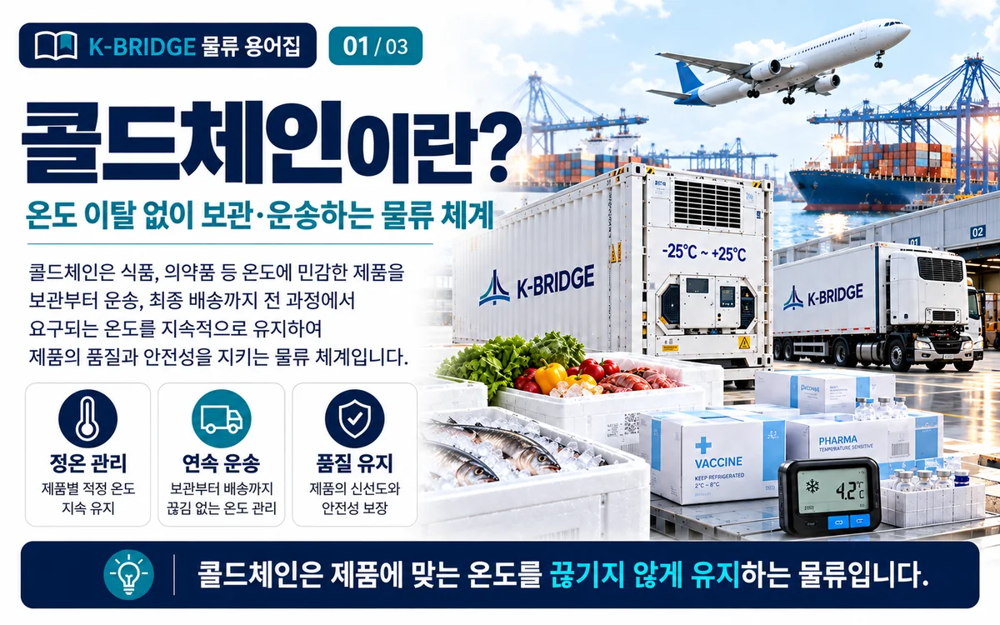
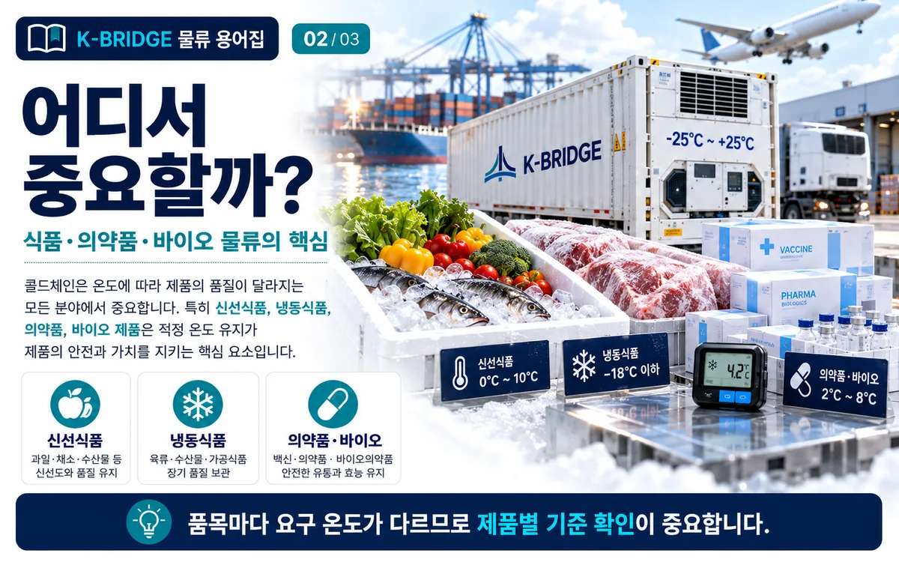
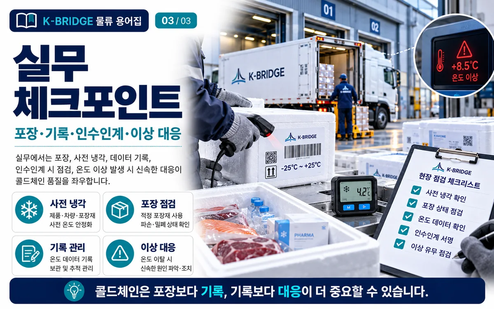

냉장·냉동 화물은 몇 도에 맞춰 보내야 안전할까요?
모든 콜드체인 화물에 같은 온도 기준을 적용할 수 없습니다. 제품별 허용 범위와 일탈 관리 방식을 먼저 확인해야 합니다.
이 글의 핵심 부분부터 살펴보기핵심 요약
콜드체인(Cold Chain)은 온도에 민감한 화물을 생산·보관·운송·환적·배송 전 과정에서 정해진 조건으로 관리하는 공급망입니다. 핵심은 냉장·냉동 장비 자체보다 제품별 허용온도, 포장, 예냉, 연속 모니터링, 인계기록, 온도 일탈 대응을 하나의 체계로 연결하는 것입니다.
냉장·냉동 온도는 몇 도로 맞춰야 하나요?
가장 중요한 원칙은 ‘콜드체인 = 무조건 2~8℃’가 아니라는 점입니다. 화물마다 요구조건이 다르므로 제품의 표시사항, 품목별 기준, 제조사 또는 품목허가 조건을 먼저 확인해야 합니다.
| 구분 | 대표 기준·예시 | 주요 화물 | 실무 확인사항 |
|---|---|---|---|
| 냉장 식품 | 일반적으로 0~10℃ | 가공식품·유제품 등 | 품목별 별도 기준과 제품 표시가 있으면 그 기준 우선 |
| 냉동 식품 | 일반적으로 -18℃ 이하 | 냉동수산물·냉동식품 등 | 적입 전 제품온도, 해동·재동결 위험, 도어 개방시간 확인 |
| 백신 | 2~8℃가 흔한 전통 콜드체인 예시 | 백신류 | 제품별 허가조건 우선, 동결 민감성도 확인 |
| 기타 의약품 | 품목허가·신고 조건 | 바이오·진단·의약품 | 제조사 기준, 포장검증, 데이터로거와 일탈절차 확인 |
국내 식품공전의 일반적인 정의에서는 별도 규정이 없는 경우 냉장을 0~10℃, 냉동을 -18℃ 이하로 봅니다. 다만 수산물·축산물·가공식품 등 품목별 세부기준이 따로 있을 수 있으므로 실제 수출입에서는 제품별 규격과 수입국 규정을 다시 확인해야 합니다.
콜드체인(Cold Chain)이란?
콜드체인은 온도에 민감한 제품이 생산된 순간부터 최종 사용자에게 전달될 때까지 필요한 보관·운송 조건을 끊김 없이 유지하는 물류 체계입니다.
신선식품, 냉동식품, 백신·바이오의약품처럼 온도 변화가 품질과 안전성에 직접 영향을 주는 화물은 한 구간에서라도 관리가 끊기면 문제가 생길 수 있습니다. 그래서 콜드체인은 냉장창고나 리퍼컨테이너 하나를 뜻하는 것이 아니라 포장 → 예냉 → 보관 → 운송 → 환적 → 인계 → 최종배송을 하나로 관리하는 개념입니다.

왜 온도관리가 그렇게 중요한가요?
식품은 온도가 올라가면 미생물 증식이나 품질 저하가 빨라질 수 있고, 냉동제품은 해동과 재동결 과정에서 조직·수분·외관이 손상될 수 있습니다. 의약품은 더 민감합니다. 제품이 허가된 보관조건을 벗어나면 효능·안정성에 영향을 줄 수 있어 일탈 발생 시 품질판정이 필요할 수 있습니다.
WHO의 의료제품 유통 가이드도 보관·운송 과정의 온도, 습도, 포장, 기록과 품질시스템을 함께 관리하도록 강조하고 있습니다. 2026년 WHO의 온도매핑 도구 역시 냉장·냉동설비와 창고의 Temperature Mapping과 지속적인 모니터링을 적정 보관조건 확보의 핵심으로 다룹니다.

어떤 화물이 콜드체인 대상인가요?
중요한 것은 품목명이 아니라 그 제품이 어느 온도에서 얼마 동안 품질을 유지할 수 있는지입니다. 같은 품목군에서도 가공방법, 포장, 수분함량, 안정성 데이터에 따라 관리조건이 달라질 수 있습니다.
해상·항공·육상에서 콜드체인은 어떻게 운송하나요?
해상 / Reefer Container
대량 냉장·냉동화물은 리퍼컨테이너가 대표적입니다. 설정온도뿐 아니라 환기량, 습도, 공기순환, 적입패턴, PTI, 전원연결과 환적지 플러그 관리가 중요합니다. 리퍼는 뜨거운 화물을 급속 냉각하는 장비가 아니라 설정조건을 유지하는 운송장비라는 점도 기억해야 합니다.
항공 / Active·Passive Packaging
고가·긴급 의약품은 항공운송을 많이 사용합니다. 보냉박스와 냉매를 활용하는 Passive 방식, 자체 냉각·전원 기능이 있는 Active Container 방식 등이 있으며, 공항 보관·램프 이동·환적시간까지 포함해 Route Risk Assessment가 필요합니다.
육상 / Refrigerated Truck
냉장·냉동 차량은 공장-창고-항만·공항-최종배송을 연결합니다. 상차 전 예냉, 차량 내부 청결, 도어 개방시간, 혼재화물의 온도조건과 데이터로거 위치를 확인해야 합니다.
온도 모니터링과 Temperature Mapping은 무엇인가요?
콜드체인의 품질은 ‘설정온도’보다 실제 온도 이력으로 확인합니다.
- Data Logger: 운송 중 실제 온도를 시간대별로 기록합니다. 제품 중심부·포장 내부·컨테이너 위치에 따라 측정값이 달라질 수 있어 설치 위치도 중요합니다.
- 실시간 IoT 모니터링: 온도·습도·위치·문 열림 등을 실시간으로 확인해 이상 징후에 빠르게 대응할 수 있습니다.
- Temperature Mapping: 냉장창고·냉동고·보관설비 안에서 위치별 온도 차이를 측정해 Hot Spot과 Cold Spot을 파악하는 작업입니다.
- Calibration: 센서와 기록장치가 실제 온도를 정확히 측정하는지 정기적으로 검교정합니다.
- Excursion 기록: 일탈 발생시간, 최대·최저온도, 노출시간, 원인과 조치, 최종 품질판정까지 기록합니다.

의약품 콜드체인은 무엇이 더 까다로운가요?
의약품은 제품별 허가사항과 품질시스템이 기준이 되기 때문에 단순히 냉장·냉동 온도만 맞추면 끝나지 않습니다. 식약처는 냉장·냉동 보관 의약품의 유통 과정에서 자동온도기록장치 등 온도관리 기준을 운영하고 있으며, 생물학적 제제의 보관·수송에서는 수송설비 검증과 자동온도기록장치 관리도 규정하고 있습니다.
IATA의 의약품 항공운송 기준도 시설·장비, Temperature Mapping, 센서 교정·검증, 공급업체 관리, Route Planning, 일시보관과 램프·항공기 적재까지 전체 프로세스를 관리하도록 강조합니다.
콜드체인 수출입 전 체크리스트
- 제품 조건: 허용온도, 허용 일탈시간, 동결 민감성, 습도·환기 조건을 확인했는가?
- 포장: 예상 운송시간과 계절·외기온을 반영한 포장·냉매 검증이 되어 있는가?
- 예냉: 제품과 냉장차·리퍼컨테이너가 적입 전에 필요한 조건에 도달했는가?
- 운송수단: Reefer, 냉장차, Active/Passive 포장 중 화물 특성과 리드타임에 맞는가?
- 환적·대기: 항만·공항·창고에서 전원차단이나 상온노출 가능 구간을 확인했는가?
- 모니터링: 데이터로거의 위치·측정주기·회수방법·실시간 알람 조건을 정했는가?
- 인계: 각 운송사·창고·포워더 사이의 책임범위와 인계기록이 명확한가?
- 일탈 대응: 온도 이상 발생 시 격리, 보고, 품질판정, 보험·클레임 자료 확보 절차가 있는가?
KEY TAKEAWAYS
이 글에서 기억할 것
- 콜드체인은 냉장차가 아니라 전 구간의 온도관리 체계입니다.
- 식품·의약품의 관리온도는 제품별 기준이 우선입니다.
- 리퍼 설정온도만큼 예냉·적입·환적·인계가 중요합니다.
- Data Logger와 Temperature Mapping으로 실제 온도 이력을 확인합니다.
- 온도 일탈 발생 시 기록·격리·품질판정 절차가 필요합니다.
자주 묻는 질문
Q. 콜드체인은 단순히 냉장차로 운송하는 것인가요?
아닙니다. 콜드체인은 생산·포장·예냉·보관·운송·환적·배송까지 필요한 온도 조건을 끊기지 않게 유지하고 기록하는 전체 관리체계입니다.
Q. 냉장과 냉동의 기준 온도는 어떻게 보나요?
국내 식품공전의 일반 기준에서는 별도 규정이 없는 경우 냉장은 0~10℃, 냉동은 -18℃ 이하로 봅니다. 다만 실제 제품의 품목별 기준과 표시사항이 우선합니다.
Q. 의약품은 모두 2~8℃로 운송하면 되나요?
아닙니다. 의약품은 품목허가·신고사항과 제조사 지정 보관·운송 조건이 기준입니다. 2~8℃는 많은 백신 등에 쓰이는 대표적인 전통 콜드체인 범위일 뿐 모든 의약품에 적용되는 단일 기준은 아닙니다.
Q. 리퍼컨테이너 설정온도만 맞추면 충분한가요?
설정온도만으로는 부족합니다. 화물 예냉 상태, 적입방법, 환기·습도 조건, 공기순환, 전원 연결, 환적·대기시간, 데이터로거 위치와 기록까지 함께 확인해야 합니다.
Q. 온도 일탈이 발생하면 화물을 바로 폐기해야 하나요?
반드시 그런 것은 아닙니다. 일탈 시간, 최고·최저온도, 제품 안정성 자료와 제조사·품질부서 기준을 확인해 격리 후 적합 여부를 판정해야 합니다. 임의로 정상 출고하는 것은 피해야 합니다.
Q. 해상과 항공 중 콜드체인 화물은 어떤 운송이 더 좋나요?
정답은 화물의 허용시간, 온도민감도, 포장 성능, 운임, 출발·도착지 인프라에 따라 달라집니다. 장거리 대량화물은 리퍼 해상운송이, 고가·긴급 의약품 등은 항공운송이 유리할 수 있어 총 운송시간과 위험구간을 함께 비교해야 합니다.
NEXT STEP
이 글과 함께 보면 좋은 자료
콜드체인 국제운송, 처음부터 온도조건까지 함께 확인하세요
KBRIDGE는 냉장·냉동 화물의 해상 리퍼컨테이너, 항공운송, 냉장 내륙운송과 창고 조건을 함께 검토합니다. 제품의 목표온도와 허용조건을 알려주시면 출발지부터 도착지까지 필요한 물류 흐름을 확인해드립니다.